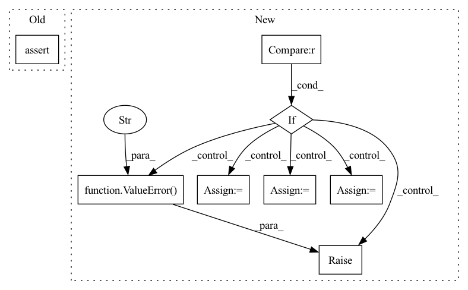

Pattern ID :286

Before Change
assert 0 <= f_min and f_min < f_max
assert f_max <= sample_rate / 2
assert 0 < self.floor
assert is_in(self.out_format, ["y", "E", "yE", "y,E"])
lower_bin_index = max(1, int(f_min / sample_rate * fft_length + 1.5))
upper_bin_index = min(
After Change
assert f_max <= sample_rate / 2
assert 0 < self.floor
if out_format == 0 or out_format == "y":
self.format_func = lambda y, E: y
elif out_format == 1 or out_format == "yE":
self.format_func = lambda y, E: torch.cat((y, E), dim=-1)
elif out_format == 2 or out_format == "y,E":
self.format_func = lambda y, E: (y, E)
else:
raise ValueError(f"out_format {out_format} is not supported")
lower_bin_index = max(1, int(f_min / sample_rate * fft_length + 1.5))
upper_bin_index = min(
fft_length // 2, int(f_max / sample_rate * fft_length + 0.5)
In pattern: SUPERPATTERN
Frequency: 3
Non-data size: 8
Instances
Fragment ID: 1161623
Project Name: sp-nitech/diffsptk
Commit Name: 33b30598598193c840ee1aac6522adba1b8ff04d
Time: 2022-04-12
Author: takenori.yoshimura24@gmail.com
File Name: diffsptk/core/fbank.py
M Class Name: MelFilterBankAnalysis
N Class Name: MelFilterBankAnalysis
M Method Name: __init__(8)
N Method Name: __init__(8)
M Parent Class: nn.Module
N Parent Class: nn.Module
M File Name: diffsptk/core/fbank.py
N File Name: diffsptk/core/fbank.py
M Start Line: 88
M End Line: 88
N Start Line: 88
N End Line: 97
Fragment ID: 1161681
Project Name: deci-ai/super-gradients
Commit Name: 07158f0e72c71da2e0cc92da9da65627dd1e6f3b
Time: 2023-02-28
Author: spsancti@users.noreply.github.com
File Name: src/super_gradients/training/models/segmentation_models/stdc.py
M Class Name: STDCBlock
N Class Name: STDCBlock
M Method Name: __init__(6)
N Method Name: __init__(6)
M Parent Class: nn.Module
N Parent Class: nn.Module
M File Name: src/super_gradients/training/models/segmentation_models/stdc.py
N File Name: src/super_gradients/training/models/segmentation_models/stdc.py
M Start Line: 37
M End Line: 44
N Start Line: 37
N End Line: 43
Fragment ID: 1161625
Project Name: sp-nitech/diffsptk
Commit Name: 33b30598598193c840ee1aac6522adba1b8ff04d
Time: 2022-04-12
Author: takenori.yoshimura24@gmail.com
File Name: diffsptk/core/mfcc.py
M Class Name: MelFrequencyCepstralCoefficientsAnalysis
N Class Name: MelFrequencyCepstralCoefficientsAnalysis
M Method Name: __init__(7)
N Method Name: __init__(7)
M Parent Class: nn.Module
N Parent Class: nn.Module
M File Name: diffsptk/core/mfcc.py
N File Name: diffsptk/core/mfcc.py
M Start Line: 76
M End Line: 79
N Start Line: 77
N End Line: 88